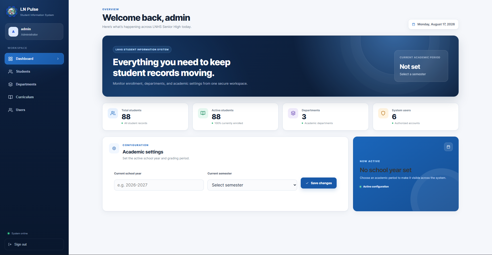

01School information system
LnPulse
CompletedAn administrative information system for organizing senior high school student records, departments, curriculum, users, and academic settings.
What I built
Built the authenticated admin workflow for creating and reviewing student records, managing departments and curriculum, administering users, and configuring the active school year and semester.